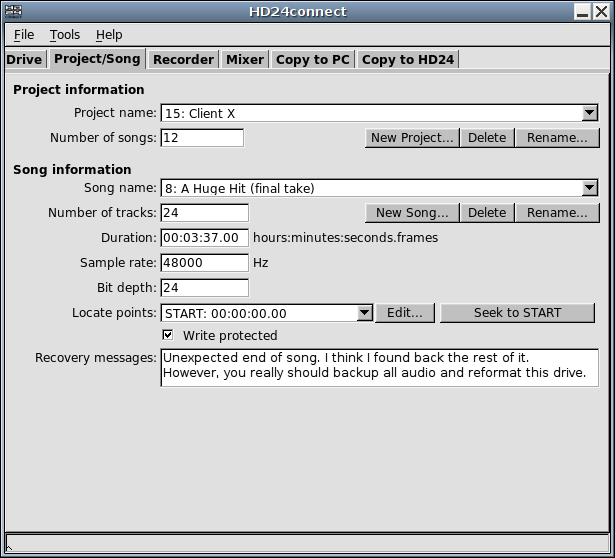

This error message will be displayed when a song uses up fewer audio blocks on disk than its length would imply. As the last part of the song is being played, the HD24 recorder can no longer figure out where on disk the rest of the audio is stored. In some cases, exporting the song with HD24connect will likely result in loud noise from this same point on.
Most likely your song is extremely fragmented. This may occur in rare cases, most likely when recording a multitude of short takes as a single song on a drive that has not been (quick)formatted for a long time. The HD24 recorder reserves a fixed amount of space to hold allocation information (which specifies where on disk the audio is stored). As a result of the fragmented recording, the HD24 recorder has run out of space to store allocation information.
Some evidence seems to point in the direction that there are situations in which only 20% of the available allocation space is actually used by the HD24 recorder; this would be a possible bug in the OS of the HD24 recorder.
However, as of yet there is no proof that this bug is for real. Also, under normal operating conditions, even this 20% should be enough for most purposes.
Leave the recorder running between takes; or use a new song for each take. Regularly quickformatting your drive will also help keep fragmentation to a minimum.
In case of the theoretical "20%" bug, HD24connect will automatically detect and correct the situation in-memory when switching to the corrupted song. The changes will not be written to the drive, but the project/song tab will then display a message informing you of the in-memory update. You should be able to transfer the song normally.

In the other situations, you should treat this in the same manner as a power loss during recording- use the longliverec header file to find and export the lost audio fragments. As allocation information is lost, you may want to send in your disk for recovery.
In either case (as in all disaster scenarios) it is a good idea not to record any audio to the drive until recovery is complete.